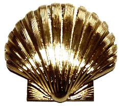

Ye Commemorative Order of St Thomas of Acon
Chapel Master Felício de Paulo
Capela de Instalação
CHAPEL Nº 129 · PROVINCE OF SOUTH AMERICA

A Ordem de Saint Thomas of AconUma tradicional Ordem de Cavalaria Cristã de origem inglesa
Inspirada em uma antiga ordem medieval fundada durante o período das Cruzadas, a Ordem de Saint Thomas of Acon preserva os ideais de fé, caridade e cavalheirismo nascidos na Terra Santa.
Sua origem remonta ao ano de 1191, durante a Terceira Cruzada, quando o Rei Ricardo I da Inglaterra, conhecido como Ricardo Coração de Leão, conquistou a cidade de Acre, na Terra Santa. Na ocasião, um sacerdote inglês chamado William, sensibilizado com a grande quantidade de cavaleiros cristãos mortos e feridos após a batalha, passou a cuidar dos enfermos e a providenciar o sepultamento digno dos combatentes cristãos.
Com o auxílio de outros irmãos, William fundou uma fraternidade com o propósito de:
Como a Ordem foi fundada em Acre (Acon, em sua forma anglicizada), recebeu o nome de Ordem de Saint Thomas of Acon, em homenagem a São Thomas Becket, Arcebispo de Canterbury e mártir da fé cristã.
Com o passar do tempo, a Ordem deixou de possuir apenas funções hospitalares e religiosas, tornando-se também uma Ordem de Cavalaria Militar, atuando ao lado dos Cavaleiros Templários, Hospitalários e Teutônicos nas Cruzadas.
Após o período das Cruzadas, a Ordem estabeleceu-se em Londres, na região de Cheapside, onde construiu sua capela e sede administrativa. Seus registros históricos demonstram que a Ordem continuou ativa até o período da dissolução das ordens religiosas promovida pelo Rei Henrique VIII no século XVI.
A atual Ordem maçônica é um renascimento moderno dessa antiga tradição inglesa, preservando seus ideais de fé cristã, caridade, cavalheirismo, serviço ao próximo, honra e fraternidade.
Mais do que uma ordem honorífica, Saint Thomas of Acon busca incentivar a prática ativa dos valores cristãos, da caridade e do serviço fraternal, mantendo viva uma das mais belas tradições da Cavalaria Cristã Inglesa.
A herança visual da Ordem e quem pode ingressar